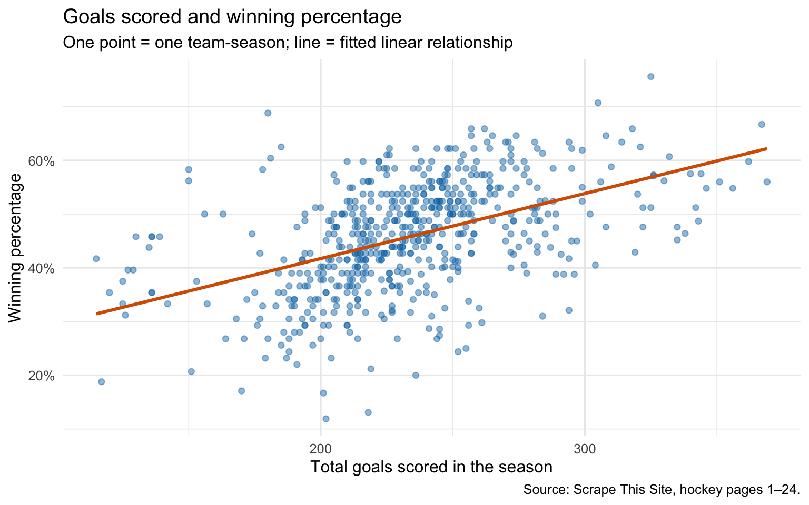
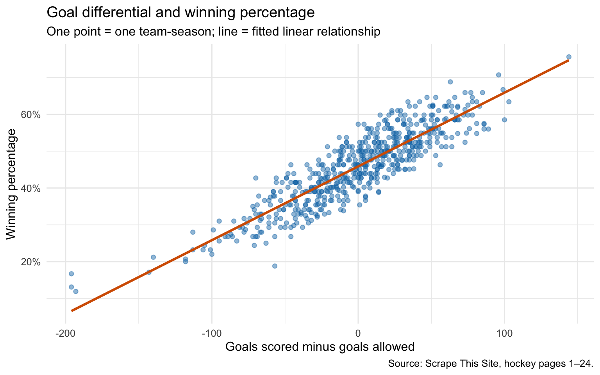

Do Teams That Score More Goals Win More Games in the NHL?
web-scraping
sports
data-analysis
Author
Rui Bao
Published
September 21, 2026
What I wanted to compare
A team that scores a lot of goals looks strong on offense. But if it also gives up a lot of goals, those numbers may not tell us much about how often it wins. I wanted to compare two simple measures: total goals scored and goal differential, which is goals scored minus goals allowed. Which one is more closely associated with NHL winning percentage?
This is useful for a quick comparison of teams. If I only have time to look at a few statistics, I want to know whether scoring alone leaves out too much information.
Getting the data
I used rvest to collect team statistics from the hockey pages on Scrape This Site. This is a public scraping practice site. The code uses the first 24 pages, matching my original analysis, rather than assuming they cover every available record. It pauses one second between new page requests and saves each page locally. Later renders use those saved pages. No login, CAPTCHA, or paywall is bypassed.
Show R code
library(rvest)library(dplyr)library(readr)library(ggplot2)for (folder inc("data/raw", "data/clean", "figures", "results")) {dir.create(folder, recursive =TRUE, showWarnings =FALSE)}page_numbers <-1:24scrape_hockey_page <-function(page_number) { url <-paste0("https://www.scrapethissite.com/pages/forms/?page_num=", page_number) file <-file.path("data/raw", sprintf("page_%02d.html", page_number)) record_file <-paste0(file, ".csv")if (!file.exists(file)) {Sys.sleep(1) page <-read_html(url)# Stop on unexpected content rather than trying to evade access controls.if (length(html_elements(page, "tr.team")) ==0) {stop("No team rows on page ", page_number,". Check the site manually; do not bypass access restrictions.") } xml2::write_html(page, file)write_csv(tibble(page_number = page_number, source_url = url,retrieved_at =format(Sys.time(), "%Y-%m-%d %H:%M:%S %Z")), record_file) } else { page <-read_html(file) }if (!file.exists(record_file)) {stop("Missing retrieval record for ", file) } rows <-html_elements(page, "tr.team")if (length(rows) ==0) stop("No team rows in ", file) field <-function(selector) html_text2(html_element(rows, selector))tibble(team =field(".name"), year =field(".year"),wins =field(".wins"), losses =field(".losses"),win_pct =field(".pct"), goals_for =field(".gf"),goals_against =field(".ga"),page_number = page_number, source_url = url )}hockey_raw <-bind_rows(lapply(page_numbers, scrape_hockey_page))write_csv(hockey_raw, "data/raw/hockey_raw.csv")retrievals <-bind_rows(lapply(page_numbers, function(p) {read_csv(file.path("data/raw", sprintf("page_%02d.html.csv", p)),show_col_types =FALSE)}))write_csv(retrievals, "results/retrieval_log.csv")numeric_columns <-c("year", "wins", "losses", "win_pct","goals_for", "goals_against")parsed <- hockey_raw |>mutate(team =trimws(gsub("\\s+", " ", team)),across(all_of(numeric_columns),~parse_number(.x, na =c("", "NA"))))missing_row <-!complete.cases(parsed[, c("team", numeric_columns)]) | parsed$team ==""missing_count <-sum(missing_row)hockey <- parsed[!missing_row, ]if (nrow(hockey) ==0) stop("No complete records remain.")# One observation should represent one team in one season.if (anyDuplicated(hockey[c("team", "year")])) {stop("Duplicate team-season records: inspect the saved pages.")}if (any(hockey$win_pct <0| hockey$win_pct >1) ||any(hockey$goals_for <0| hockey$goals_against <0) ||any(hockey$wins <0| hockey$losses <0)) {stop("Invalid values: inspect the source data.")}hockey <- hockey |>mutate(goal_diff = goals_for - goals_against)write_csv(hockey, "data/clean/hockey.csv")comparison <-tibble(measure =c("Goals scored", "Goal differential"),correlation =c(cor(hockey$goals_for, hockey$win_pct),cor(hockey$goal_diff, hockey$win_pct)))write_csv(comparison, "results/correlations.csv")sample_summary <-tibble(pages_requested =length(page_numbers),scraped_rows =nrow(hockey_raw), incomplete_rows_removed = missing_count,analyzed_rows =nrow(hockey), first_year =min(hockey$year),last_year =max(hockey$year))write_csv(sample_summary, "results/sample_summary.csv")write_csv(count(hockey, year, name ="team_seasons"),"results/observations_by_year.csv")writeLines(capture.output(sessionInfo()), "results/sessionInfo.txt")r_goals <- comparison$correlation[1]r_diff <- comparison$correlation[2]fmt <-function(x) sprintf("%.2f", x)stronger <-if (r_diff > r_goals) "goal differential"else"goals scored"p1 <-ggplot(hockey, aes(goals_for, win_pct)) +geom_point(alpha =0.45, color ="#0072B2") +geom_smooth(method ="lm", formula = y ~ x, se =FALSE, color ="#D55E00") +scale_y_continuous(labels =function(x) paste0(round(100* x), "%")) +labs(title ="Goals scored and winning percentage",subtitle ="One point = one team-season; line = fitted linear relationship",x ="Total goals scored in the season", y ="Winning percentage",caption ="Source: Scrape This Site, hockey pages 1–24.") +theme_minimal(base_size =12)p2 <-ggplot(hockey, aes(goal_diff, win_pct)) +geom_point(alpha =0.45, color ="#0072B2") +geom_smooth(method ="lm", formula = y ~ x, se =FALSE, color ="#D55E00") +scale_y_continuous(labels =function(x) paste0(round(100* x), "%")) +labs(title ="Goal differential and winning percentage",subtitle ="One point = one team-season; line = fitted linear relationship",x ="Goals scored minus goals allowed", y ="Winning percentage",caption ="Source: Scrape This Site, hockey pages 1–24.") +theme_minimal(base_size =12)ggsave("figures/goals_scored.png", p1, width =8, height =5, dpi =180)ggsave("figures/goal_differential.png", p2, width =8, height =5, dpi =180)
The saved retrieval dates range from 2026-10-04 to 2026-10-04. The scrape returned 582 rows. After converting numeric fields and removing 0 incomplete rows, I had 582 team-seasons, with year labels from 1990 to 2011. I also checked for duplicate team-season records and out-of-range values. I kept the website’s reported winning percentage rather than calculating it from wins and losses alone.
Scoring alone leaves a lot unexplained

Figure 1: The same season’s total goals scored and reported winning percentage.
The correlation between goals scored and winning percentage is 0.48. There is an upward pattern, but teams with similar scoring totals can still have different winning percentages. A scoring total says nothing about how many goals a team allowed. Scoring 250 goals looks different when the team allows 200 rather than 260.
Adding goals allowed changes the picture

Figure 2: Goal differential includes both scoring and goals allowed.
The correlation for goal differential is 0.89. Of the two measures, goal differential has the higher correlation in this sample. This is a comparison of two descriptions of the same completed seasons, not a test of whether either statistic can predict next season.
Measure
Correlation with winning percentage
Goals scored
0.48
Goal differential
0.89
What I would use this for
For a quick review of past team performance, I would start with goal differential, then check the separate scoring and goals-allowed numbers. This gives me a first comparison and a way to see what sits behind it. Looking only at offense can make a team seem stronger than its overall results suggest.
I would also compare teams from the same season where possible. This dataset combines seasons with potentially different schedules and scoring environments, while the horizontal axes use totals rather than per-game rates. That limits comparisons across years. The sample is drawn from a teaching website, and I have not independently checked every record against official NHL statistics.
My takeaway is simple: goals scored are only half of a team’s scoring record. Including goals allowed is useful when describing performance, but these correlations do not establish causation or prove which statistic will predict future wins.
Code and data
The GitHub repository includes this post under blog/posts/post2. The README explains how to run it. Saved source pages and raw data are in data/raw, cleaned data in data/clean, charts in figures, and calculated tables in results. The source is Scrape This Site’s hockey dataset; it is not an official NHL data release.